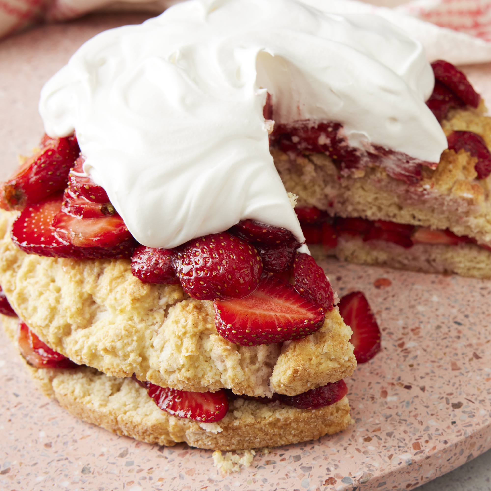

Strawberry Shortcake

Description
This strawberry shortcake recipe is the classic, sweet biscuit-style shortcake - not
the pound cake variety. The cake is sliced in half and layered with juicy strawberries
and whipped cream for a sensational summertime treat.
Strawberry shortcake is a classic summertime treat. It's loaded with fresh, bright
flavors (and it's quick and easy to make). This delicious strawberry shortcake recipe
will be your new go-to for all your strawberry dessert needs. Be sure to click that
save button — you'll come back to this recipe for years to come.
Ingredients
- 3 pints fresh strawberries
- ½ cup white sugar
- 2¼ cups all-purpose flour
- 4 teaspoons baking powder
- 2 tablespoons white sugar
- ¼ teaspoon salt
- ⅓ cup shortening
- 1 egg
- ⅔ cup milk
- 2 cups whipped heavy cream
Steps
- Slice the strawberries and toss them with 1/2 cup of white sugar. Set aside.
- Preheat oven to 425 degrees F (220 degrees C). Grease and flour one 8 inch
round cake pan.
- In a medium bowl combine the flour, baking powder, 2 tablespoons white sugar and
the salt. With a pastry blender cut in the shortening until the mixture resembles
coarse crumbs. Make a well in the center and add the beaten egg and milk. Stir
until just combined.
- Spread the batter into the prepared pan. Bake at 425 degrees F (220 degrees C)
for 15 to 20 minutes or until golden brown. Let cool partially in pan on wire rack.
- Slice partially cooled cake in half, making two layers. Place half of the strawberries
on one layer and top with the other layer. Top with remaining strawberries and cover
with the whipped cream.